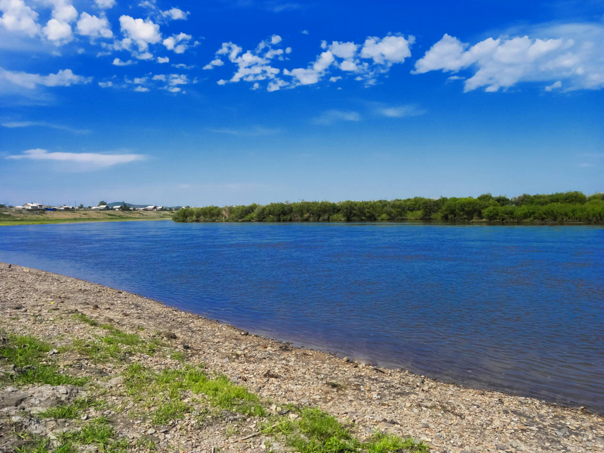
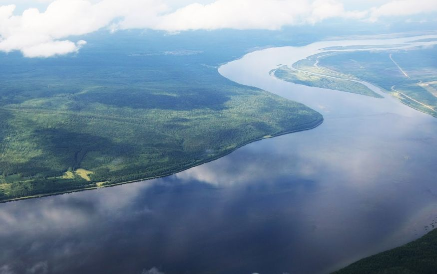
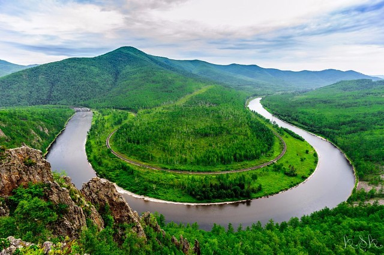
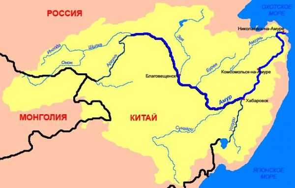

Амур с Аргунь
Главная страница


Амур — река на Дальнем Востоке в Восточной Азии. Протекает по территории России и границе России и КНР. Длина — 2824 км (от слияния Шилки и Аргуни). Впадает в Охотское море или Японское море. Годовой сток составляет 403,66 км³. Наименование реки произошло от общей для тунгусо-маньчжурских языков основы амар, дамур — «большая река». Китайцы называли Амур «Хэйхэ» 黑河 — «чёрная река», затем «Хэйлунцзян» — 黑龙江 — «Река чёрного дракона».
Согласно легенде, в давние времена чёрный дракон, обитавший в реке и олицетворявший добро, победил злого, белого, дракона, который топил лодки на реке, мешал людям рыбачить и вообще нападал на любое живое существо. Победитель остался жить на дне реки в районе Хинганских щёк, что на границе Амурской и Еврейской автономной областей. С тех пор эта река и называется рекой Чёрного Дракона.
«Хвост» Чёрного Дракона находится в степях Монголии и Даурии, «туловище» лежит в четырёх российских регионах и в одной китайской провинции. Две левые «лапы» дотягиваются до самого Станового хребта, где берут начало притоки Амура — Зея и Бурея, а две правые «лапы» — притоки Сунгари и Уссури — в Китае и в Приморье. «Голова» Дракона упирается в Охотское море, и он «пьёт воду» Татарского пролива. Длина «тела» Чёрного Дракона от «хвоста» до «головы» — более 4500 км, а площадь его (бассейн Амура) достигает 1,8 млн км².
Длинна: 2824 км
Площадь: 1 855 тыс. км²
Расход воды: 12 800 м³/сек

АМУР НА КАРТЕ